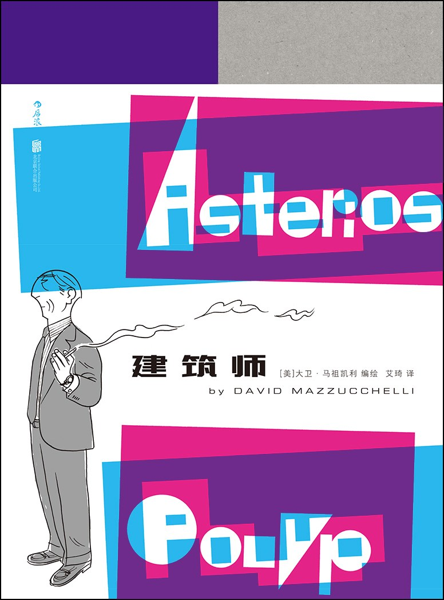

《建筑师》

总体观点
形式即内容的高峰：大卫·马祖凯利巧妙运用四色分色（蓝/黄/紫/品红）与不同角色的专属画风（立体派、表现主义、包豪斯几何），将人物认知范式的隔阂与交融完全视觉化。
纯粹的形式主义理性无法涵盖生命的混沌与无常：自负的“纸上建筑师”毕生构建从未施工落地的图纸蓝图，唯有在失去所有身外之物后，才能在泥土与扳手中理解肉身的脆弱与真爱。
双生子的神话隐喻贯穿始终：阿斯泰里奥斯毕生在内心深处与死产的孪生兄弟伊格纳修斯对话，在非黑即白的二元对立中苦苦摸索生命的完整与宽恕。
核心观点
-
1. 画风即人格：以视觉语言重塑角色认知边界
每个角色出场时都拥有独特的色彩配置、字体风格与线条形态，人物对话不仅是台词交流，更是视觉形式的角力与渗透。
阿斯泰里奥斯用理性的蓝色硬朗网格勾勒，妻子哈娜则是温润感性的紫色交叉排线；二人热恋时线条水乳交融，争吵时网格如栅栏般割裂空间。 -
2. 纸上建筑师的傲慢破产：无法落地的前卫假象
只在图纸和象牙塔里设计建筑的知识分子，自以为参透了空间力学，实则缺乏对现实材料重力与真实人间温度的敬畏。
他赢得了无数建筑学术大奖，但所有作品从未真正砌起一块砖石；一场突如其来的雷火将他精心分类的公寓烧得一干二净。 -
3. 重回机械与泥土：身体力行带来的精神治愈
在阿波罗小镇成为一名汽车修理工后，阿斯泰里奥斯第一次用沾满机油的双手触摸真实的金属运转，治愈了智力过度肥大带来的精神麻痹。
汽修铺老板斯蒂格利茨一家性格怪诞却温暖包容，在拆装发动机齿轮与陪伴小镇少年中，阿斯泰里奥斯学会了放下评判倾听他人。 -
4. 双生兄弟的宿命回声：残缺个体的完整性追寻
自幼背负‘幸存者内疚’的主人公，把死去的胞兄视为理想中那个热烈勇毅的自己，直至晚年才明白接纳自身残缺才是成熟的开端。
在独处与梦魇中，死去的伊格纳修斯化作无处不在的低语，像镜子一样无情映照出阿斯泰里奥斯在亲密关系中的自私与退缩。 -
5. 俄耳甫斯式的寻爱之旅：在风雪迷途中的终极重逢
历经劫难后的主人公终于鼓起勇气踏上寻找前妻的赎罪之旅，不再为了证明自己的理论正确，而是为了真诚地说出一句对不起。
结局在白雪皑皑的山间小屋，阿斯泰里奥斯与哈娜平静相视，夜空划过不可预测的流星，暗示命运的不可计算与释怀。
全书结构
-
第一章：雷击之夜（大厦崩塌与仓皇出逃）
五十岁生日当夜，一道惊雷击中曼哈顿公寓引发大火；阿斯泰里奥斯仅带走瑞士军刀与打火机跳上长途客车，象征精致中产生活瞬间清零。
公寓在大火中崩塌的跨页，精密陈设在刺目火光中化为灰烬，分镜如定格动画般凝固了主角一生秩序的终结。 -
第二章：阿波罗小镇（扳手与机油的新生）
客车在不知名的阿波罗镇抛锚，阿斯泰里奥斯被淳朴善良的汽修铺老板斯蒂格利茨收留，脱下笔挺西装换上工装连体服开启体力劳作。
前大学知名教授笨拙地学习调校火花塞与更换离合器，机油的气味第一次替代了香水与雪茄烟草。 -
第三章：学院回眸（纸上理论与二元对称）
倒叙主角在建筑名校执教的黄金岁月，展示其标志性的‘二元论’宇宙观：世界永远被他粗暴地划分为理性与感性、直线与曲线、对称与混沌。
他在讲台上激情洋溢地用几何粉笔画讲解完美空间，台下学生惊叹于其智性魅力，却不知他在现实生活中完全丧失同理心。 -
第四章：哈娜与交响（画风交融的热烈恋爱）
记述阿斯泰里奥斯在画廊与雕塑家哈娜·佐尼奇相遇相恋的甜蜜时光；画面色彩与线条在两位性格截然不同的人物互动中产生绝美的复调交响。
两人初吻的画面中，蓝色的理性线条与粉紫色的感性笔触完美缠绕，背景浮现出古典壁画般斑斓绚烂的色彩粒子。 -
第五章：裂痕与冷战（自私傲慢下的婚姻破裂）
婚后生活的琐碎摩擦逐渐暴露了阿斯泰里奥斯居高临下的自恋人格；他对哈娜艺术创作的指手画脚与对妻子内心情绪的冷漠导致关系不可逆恶化。
在哈娜个人雕塑展的重要夜晚，他喧宾夺主高谈阔论建筑理论，将妻子晾在一旁，造成两人关系的决定性裂痕。 -
第六章：小镇夜话（民间智慧与温存慰藉）
回到阿波罗小镇的当下时空；阿斯泰里奥斯与斯蒂格利茨一家围炉夜话，听修车老板畅谈对宇宙、星宿与人生的朴素见解，逐渐冰释前嫌。
老板娘为他烤制热气腾腾的家常苹果派，粗俗却充满生命力的谈笑驱散了阿斯泰里奥斯多年来笼罩在学术优越感里的虚无。 -
第七章：潜入冥界（超现实梦魇与内疚清算）
主人公在暴风雨夜陷入深沉的高烧梦境，神游至希腊神话中的冥界，直面未曾出世的双生弟弟伊格纳修斯，清算一生犯下的冷漠之罪。
梦境采用全黑底色配荧光线条，俄耳甫斯式的冥河摆渡场景逼真幻化为曼哈顿地铁隧道的呼啸车灯。 -
第八章：风雪归途（朝向未知与命定流星）
阿斯泰里奥斯告别小镇驱车北上，在漫天大雪中敲开哈娜偏僻山居的木门；两人没有多余的戏剧性台词，在静默对视中迎接天际滑落的流星。
全书最后一幕：天空中划过一道未知的光芒，究竟是希望的曙光还是流星坠落，留给读者无限回味与深思。